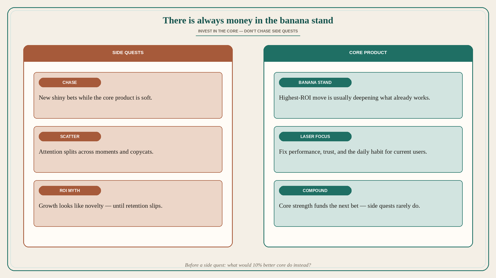

There is always money in the banana stand
Source: Lenny Rachitsky / Peter Sellis (@lennysan)
original post
What it claims
The highest-ROI growth move is usually investing in the core product — not chasing side quests. After Snap’s 2018 redesign flattened DAU, the team laser-focused on performance for existing users (especially Android) and sparked a multi-year renaissance. At Discord, rather than chase Midjourney’s moment, the team made Discord the best place for intentional multiplayer with friends — and saw some of the fastest growth in history. There is always money in the banana stand.
Why it matters for a PO
Roadmaps fill with adjacent bets, platform experiments, and “moment” features while the core Job is still soft: slow, confusing, or unreliable for current users. Side quests feel like strategy; they often starve the habit that already pays. A PO who can name the core and protect capacity for it will outgrow teams that constantly invent new surfaces.
3 takeaways
- Before green-lighting a side quest, ask what 10% better core would do for the same capacity.
- When growth stalls, inspect the core experience of existing users first — not the next adjacent bet.
- Novelty is not ROI; compounding trust and daily use in the core usually is.
Practice this week
List every in-flight initiative. Tag each as CORE (deepens the main Job for current users) or SIDE QUEST. Cap side-quest capacity explicitly (e.g. ≤20%). For the largest side quest, write one sentence: “We are doing this instead of improving X in the core because…” If you cannot defend the because, park it.